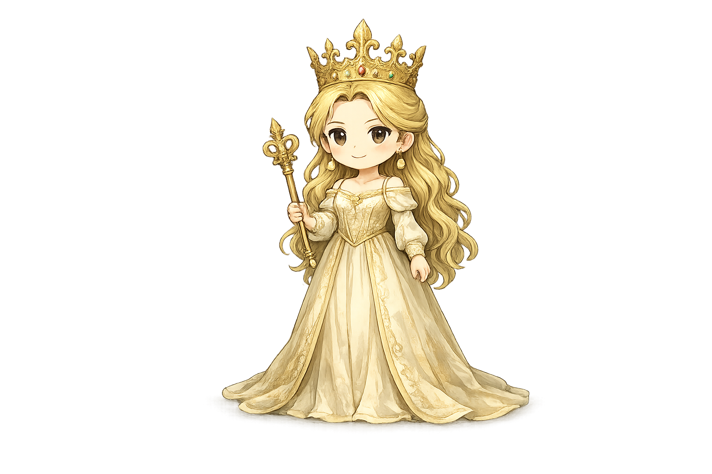
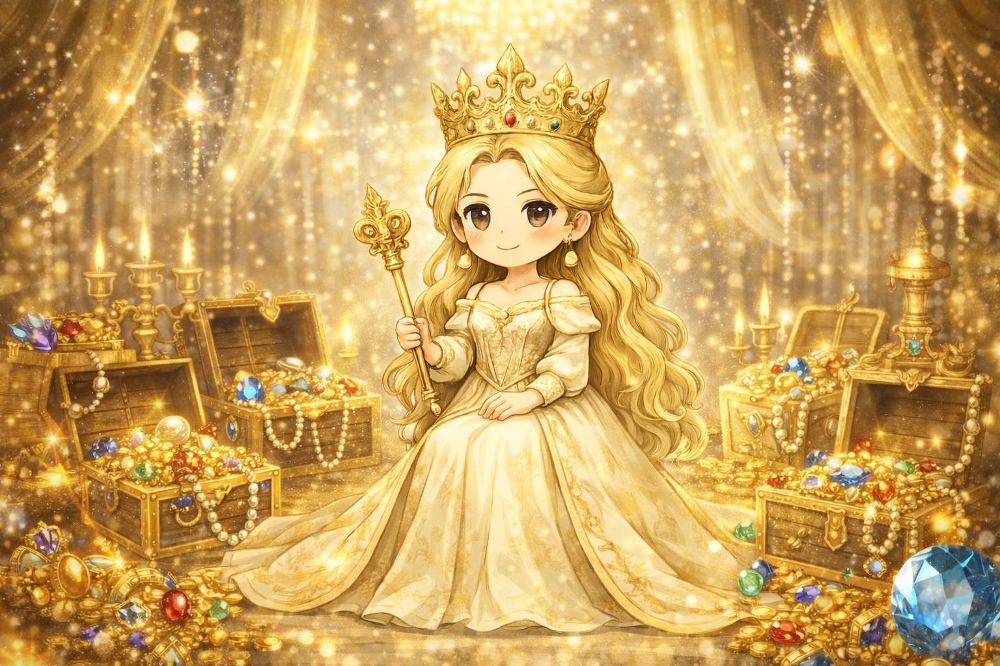

The Golden Queen

目に見える成果と支配こそが安心の源。
舐められることを極端に恐れ、常に自分が優位な立場であろうとする。
各項目が全体に占める割合

目に見える成果と支配こそが安心の源。舐められることを極端に恐れ、常に自分が優位な立場であろうとする。
野心、交渉力、リスク判断力、目標達成への執念、現実的な処理能力
猜疑心、終わりのない渇望、利害関係のない友人の不在
あなたは人生において「勝つこと」を幾度となく積み重ねてきました。激しい競争の中で結果を出し、富や地位、賞賛といった輝かしい財産を自らの金庫に収めてきた人です。その達成感は確かなものであり、努力の証でもあったはずです。しかし、それらを守り続けるために常に神経を張り詰め、裏切りや失敗の可能性に備え続けるうちに、誰かを心から信用する感覚を失ってはいないでしょうか。豪華なブランド品に囲まれながらも、あなたの心は安全なはずの場所で、誰の手も届かない冷たい場所に置かれているのかもしれません。
成果志向（結果で価値を測る）／比較思考（他者との位置関係を意識）／獲得行動（評価・資源を取りに行く）／緊張耐性（競争環境に強い）
緻密な戦略で他者を出し抜き、圧倒的な成果を上げることで周囲を見返したときの、脳が痺れるような快感はありませんか。努力と計算が寸分違わず噛み合い、「自分は勝者の側に立った」という確かな実感。その瞬間、過去の不安や劣等感が一気に静まり返り、世界が手の内に収まったように感じたこともあったでしょう。あるいは、貧困や軽視、敗北を経験する中で、「力や地位がなければ誰も守ってくれないし、自分も守られない」と、骨身にしみて学んだ原体験。その痛みは、あなたにとって単なる過去ではなく、今も背中を押し続ける燃料のようなものです。あなたは勝つことでしか、安心できる場所に辿り着けなかったのかもしれません。
「無償の愛と、計算外の喪失」 見返りを一切求めずに誰かに尽くすことや、損得勘定を完全に抜きにして他愛もないバカ話をすること。 自分の弱さをさらけ出し、それでもなお受け入れられるという安らぎを、あなたは「リスク」として遠ざけてきたのかもしれません。コントロールできない運命に身を委ね、ただ「今」を享受する体験が、あなたの人生には欠けています。
あなたが手に入れてきた富や地位、実績という武装を、一度ゆっくりと解く勇気が求められています。条件や役割によって結ばれた「契約」ではなく、理由の説明を必要としない「信頼」に基づいた関係を築き直すこと。何も差し出せない状態のあなたでも、そばにいてくれる人がいるという事実に気づくこと。その体験だけが、これまで張り詰めてきた心を、本当の意味で自由にしてくれます。
財布を持たずに散歩に出かけ、動物や子供と遊んでください。あなたに何の利益ももたらさず、あなたの肩書きにも興味を持たない存在と触れ合ってください。 計算の成り立たない純粋な世界に身を置き、手が汚れるのを厭わずに笑ってみるのです。契約書のいらない関係、利害のない時間こそが、今のあなたを最も深く癒やしてくれます。